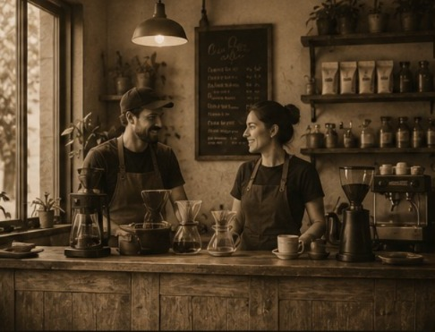
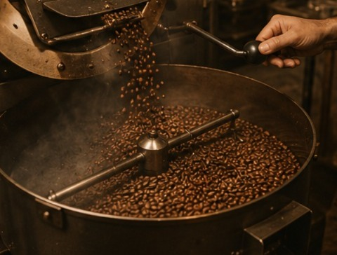
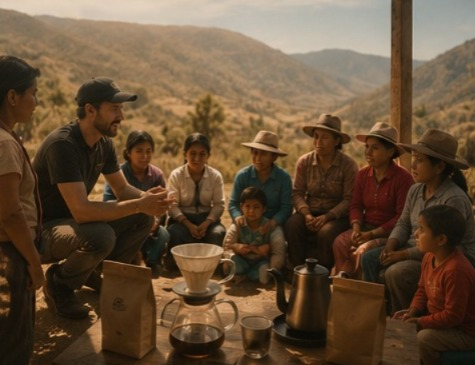

Una historia nacida entre café, tradición y naturaleza

Cultura Café nació con la pasión de crear un espacio donde las personas puedan disfrutar un café de calidad. Desde nuestros inicios buscamos trabajar con granos seleccionados, productores locales y procesos naturales para brindar una experiencia única.

Nuestro café pasa por un proceso cuidadoso de selección y tostado. Cada grano es trabajado para conservar sus aromas, sabores y características naturales, logrando una taza con identidad propia.

Compromiso Social
Cultura Café busca apoyar a las comunidades cafeteras, valorando el trabajo de los productores y promoviendo prácticas responsables con el medio ambiente.